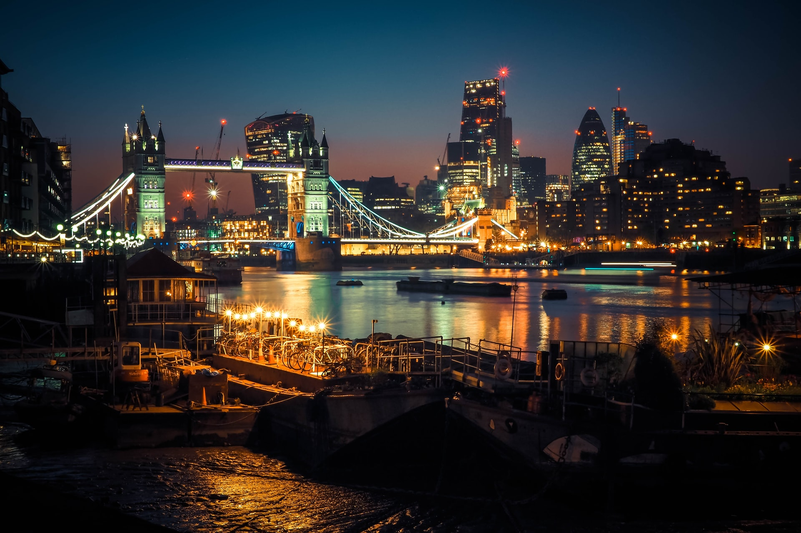
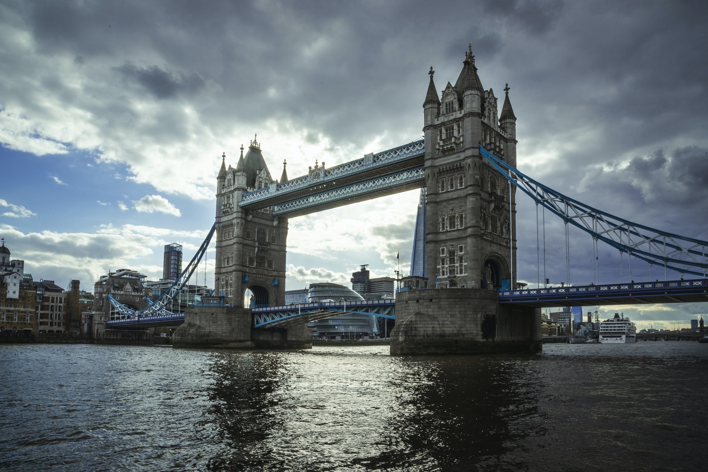
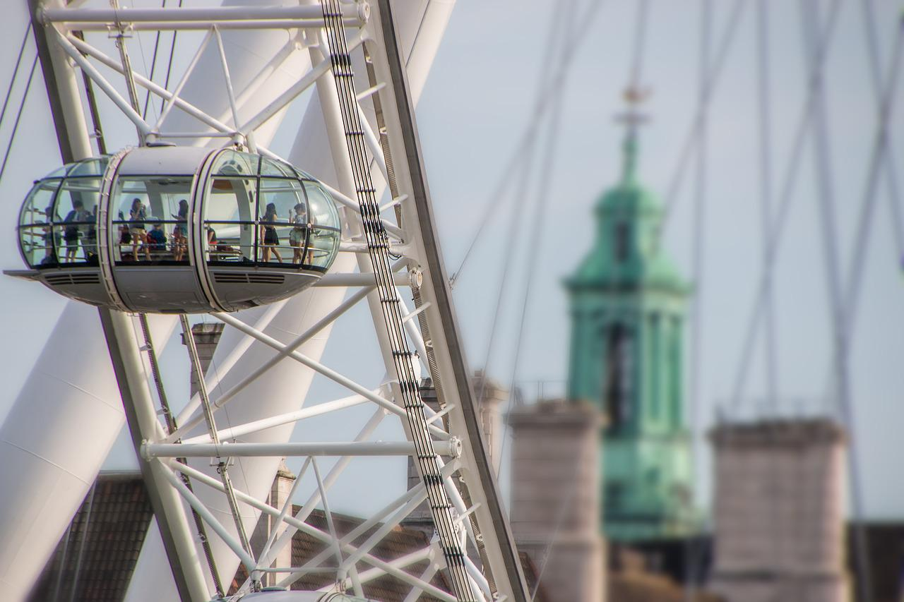
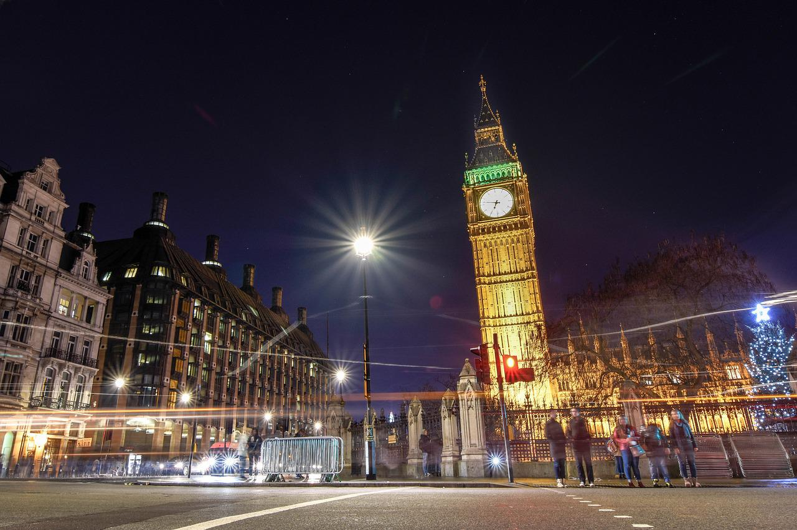
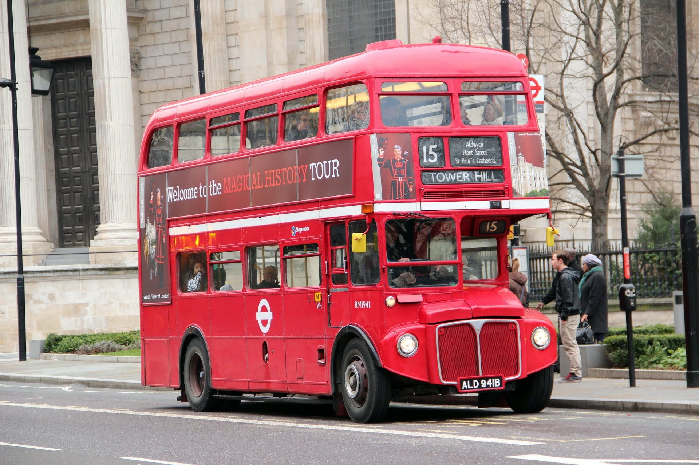
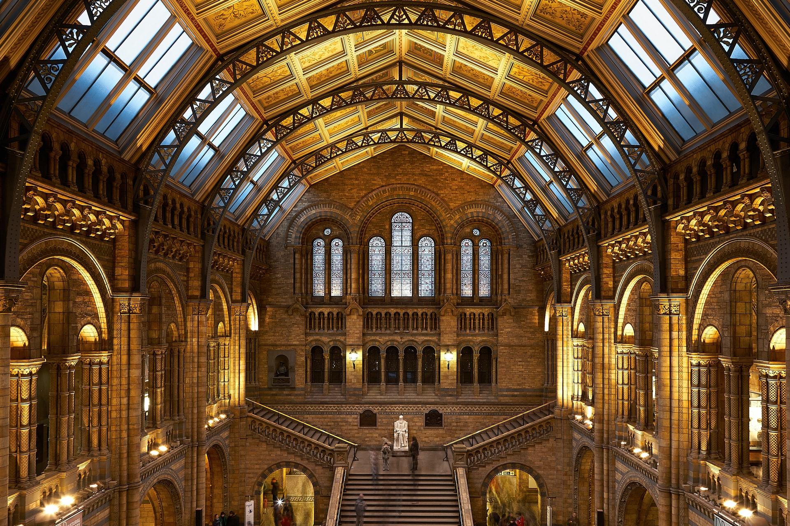

Discover London

London's famous sights
The Tower Bridge
Tower Bridge is a drawbridge in London. It crosses the River Thames near the Tower of London. It allows ships through the bridge deck when is raised at an angle in the centre.
The north side of the bridge is Tower Hill, and the south side of the bridge comes down into Bermondsey, an area in Southwark. Tower Bridge is far more visible than London Bridge, which people often mistake it for. Many tourists go to London to see the Tower Bridge. It has its own exhibition centre in the horizontal walkway. This gives one of the best vantage points in London.
The “bascules” are the surfaces raised to allow tall ships to pass through: this happens about 900 times per year. The bridge's decks (bascules) can be raised to 83° from the horizontal.
The London Eye
The London Eye, also known as the Millennium Wheel, is a giant cantilevered observation wheel on the South Bank of the River Thames in London. It is the tallest cantilevered observation wheel in Europe, and is the most popular paid tourist attraction in the United Kingdom, with over 3 million visitors per year.
London's Public transport
The famous red double-decker busses
Buses are in use since 1829 in the public transport of London. In the decades since their introduction, the red London bus has become like a symbol of the city.
As of 2021, London has 675 bus routes and around 19,000 bus-stops served by over 9,000 buses, almost all of which are operated by private companies under contract to London Buses, part of Transport for London.
The London Tubes
The London Underground, which is also known as the Underground or the Tube, is a very fast transit system in London. The Underground has its origins in the Metropolitan Railway, the world's first underground passenger railway. The Average speed of the Tubes are 33 km/h and is operated by the London Underground Limited.
Sights in London
The Tower Bridge

Tower Bridge is a Grade I listed combined bascule and suspension bridge in London, built between 1886 and 1894, Which was designed by Horace Jones and engineered by John Wolfe Barry with the help of Henry Marc Brunel.
The bridge is 800 feet (ca. 244 m) in length and consists of two 213-foot (65 m) bridge towers connected at the upper level by two horizontal walkways, and a central pair of bascules that can open to allow shipping. Originally hydraulically powered, the operating mechanism was converted to an electro-hydraulic system in 1972. The bridge is part of the London Inner Ring Road and thus the boundary of the London congestion charge zone, and remains an important traffic route with 40,000 crossings every day. The bridge deck is freely accessible to both vehicles and pedestrians, whereas the bridge's twin towers, high-level walkways and Victorian engine rooms form part of the Tower Bridge Exhibition.
Tower Bridge has become a recognizable London landmark. It is sometimes confused with London Bridge, about 0.5 miles (0.8 km) upstream, which has led to a popular urban legend about an American purchasing the wrong bridge. Several stunt pilots have flown underneath the bridge, including the pioneering Francis McClean.
The London Eye

The London Eye, or the Millennium Wheel, is a cantilevered observation wheel on the South Bank of the River Thames in London. It is Europe's tallest cantilevered observation wheel, and is the most popular paid tourist attraction in the United Kingdom, with over 3 million visitors annually. It has made many appearances in popular culture.
The structure is 135 metres (ca. 443 ft) tall and the wheel has a diameter of 120 metres (ca. 394 ft). Back then, when it was opened to the public in 2000 it was the world's tallest Big wheel.
The London Eye used to be the highest public panorama point in London until it was beaten by the 245-metre-high 804 ft observation deck on the 72nd floor of The Shard, which opened to the public on 1st February 2013.
Big Ben

Big Ben is the nickname for the Great Bell of the striking clock at the north end of the Palace of Westminster in London, England, and the name is frequently extended to refer also to the clock and the clock tower. The official name of the tower in which Big Ben is located was originally the Clock Tower, but it was renamed Elizabeth Tower in 2012 to mark the Diamond Jubilee of Elizabeth II.
Big Ben is the largest of the tower's five bells and weighs 13.5 tons (13.7 tonnes; 15.1 short tons). It was the largest bell in the United Kingdom for 23 years. The origin of the bell's nickname is open to question; it may be named after Sir Benjamin Hall, who oversaw its installation, or heavyweight boxing champion Benjamin Caunt. Four quarter bells chime at 15, 30 and 45 minutes past the hour and just before Big Ben tolls on the hour. The clock uses its original Victorian mechanism, but an electric motor can be used as a backup.
The tower is a British cultural icon recognised all over the world. It is one of the most prominent symbols of the United Kingdom and parliamentary democracy, and it is often used in the establishing shot of films set in London. The clock tower has been part of a Grade I listed building since 1970 and a UNESCO World Heritage Site.
Transport in London
Public transport services are mostly driven through the executive agency for transport in London: Transport for London controls the majority of public transport, including the Underground, Buses, Tramline, the Docklands Light Railway, London River Services and the London Overground. Other rail services are either franchised to train operating companies by the Department for Transport or, like Eurostar and Heathrow Express, operated on an open-access basis. also controls most major roads in London, but not minor roads. In addition, there are several independent airports serving London, including Heathrow, the busiest airport in Europe.

Buses are in use since 1829 in the public transport of London. In the decades since their introduction, the red London bus has become like a symbol of the city.

As of 2021, London has 675 bus routes and around 19,000 bus-stops served by over 9,000 buses, almost all of which are operated by private companies under contract to London Buses, part of Transport for London.
London has an extensive and developed transport network which includes both private and public services. London's public transport network serves as the central hub for the United Kingdom in rail, air and road transport.
History

10. January 1863 Opening of the origins of the London Underground (Metropolitan Railway).
1886 - The construction of Tower Bridge began on 22 April.
1894 - Tower Bridge was opened by the Prince and Princess of Wales with great celebrations, on 30 June.
1910 - The high-level Walkways, which were designed so that the public could still cross the Bridge when it was raised, were closed due to lack of use.
1912 - During a stunt, Frank McClean flew between the bascules and the high-level Walkways in his Short seaplane. He then proceeded to fly under at least three other bridges on his way to Westminster.
1952 - The number 78 London bus driven by Albert Gunter on its way across the Bridge, had to leap from one bascule to the other when the Bridge began to rise.
1976 - Tower Bridge switches to electrified hydraulics, rather than the steam-driven system it was originally powered by.
1977 - Tower Bridge was painted red, white and blue to celebrate the Queen's Silver Jubilee. The original colour of the Bridge was a chocolate brown colour.
1982 - Tower Bridge opened to the public for the first time since 1910, with a permanent exhibition inside called The Tower Bridge Experience.
1999 - The London Busses where Funded
2012 - Playing a focal point in the London Olympics, this year saw the Olympic rings suspended from the Walkways, and James Bond and ‘the Queen’ fly through in a helicopter during the Opening Ceremony.
1. Februar 2013 - Opening of the 72nd floor in the Shard to the public, which beet the current record of the highest public viewing place in London.
Facts over the Tower Bridge
Characteristics
Tower Bridge
| Name | Tower Bridge |
| Country | United Kingdom |
| Crosses | River Thames |
| Location | UK, England, London Google Maps |
| Carries | A100 Tower Bridge Road |
| Total Length | 244 metres (801 ft) |
| Span / The Longest Span | 61 metres (200 ft) |
| Clearance Bellow | 8.6 meters (28 ft) (closed), 42.5 metres (139 ft) (open) |
| Construction Begin | 21.06.1886 |
| Construction End | 30.06.1894 |
| Opened | 30 June 1894 |
| Type/Design/Architectural Style | Bascule bridge, Suspension bridge |
| Designer/Architect | Horace Jones, George D Stephenson |
| Website: | towerbridge.org.uk |
London Eye
| Name | London Eye |
| Country | United Kingdom |
| Type | Observation wheel |
| Date opened | March 2000 |
| Location | Lambeth, London Google Maps |
| Diameter | 120 meters (394 ft) |
London Underground
| Country | United Kingdom |
| Date opened | 1863 |
| Annual passenger numbers | 1.35 billion |
| Length of network | 402km |
| Average train speed | 33kph |
| Website | https://tfl.gov.uk/ |
London Busses
| Parent | Transport for London |
| Founded | 11 November 1999 |
| Headquarter | London |
| Service area | Greater London, Berkshire, Buckinghamshire, Essex, Hertfordshire, Kent, Surrey |
| Service type | Bus transport network |
| Routes | ca. 700 |
| Stops | 19,000 |
| Fleet | 9,068 (March 2021) |
| Daily riders | 2.09 billion annually |
| Fuel | Diesel, Hybrid, Electric, and Hydrogen |
| Website | www.tfl.gov.uk |
Geschichte
1886 - The construction of Tower Bridge began on 22 April.
1894 - Tower Bridge was opened by the Prince and Princess of Wales with great celebrations, on 30 June.
1910 - The high-level Walkways, which were designed so that the public could still cross the Bridge when it was raised, were closed due to lack of use.
1912 - During a stunt, Frank McClean flew between the bascules and the high-level Walkways in his Short seaplane. He then proceeded to fly under at least three other bridges on his way to Westminster.
1952 - The number 78 London bus driven by Albert Gunter on its way across the Bridge, had to leap from one bascule to the other when the Bridge began to rise.
1976 - Tower Bridge switches to electrified hydraulics, rather than the steam-driven system it was originally powered by.
1977 - Tower Bridge was painted red, white and blue to celebrate the Queen's Silver Jubilee. The original colour of the Bridge was a chocolate brown colour.
1982 - Tower Bridge opened to the public for the first time since 1910, with a permanent exhibition inside called The Tower Bridge Experience.
2012 - Playing a focal point in the London Olympics, this year saw the Olympic rings suspended from the Walkways, and James Bond and ‘the Queen’ fly through in a helicopter during the Opening Ceremony.
Sights nearby
The London Eye
The London Eye, or the Millennium Wheel, is a cantilevered observation wheel on the South Bank of the River Thames in London. It is Europe's tallest cantilevered observation wheel, and is the most popular paid tourist attraction in the United Kingdom with over 3 million visitors annually. It has made many appearances in popular culture.
The structure is 135 metres (443 ft) tall and the wheel has a diameter of 120 metres (394 ft). When it opened to the public in 2000 it was the world's tallest Ferris wheel. Its height was surpassed by the 160 metres (525 ft) Star of Nanchang in 2006, the 165 metres (541 ft) Singapore Flyer in 2008, and the 167 metres (548 ft) High Roller (Las Vegas) in 2014. Supported by an A-frame on one side only, unlike the taller Nanchang and Singapore wheels, the Eye is described by its operators as "the world's tallest cantilevered observation wheel".
The London Eye used to offer the highest public viewing point in London until it was superseded by the 245-metre-high (804 ft) observation deck on the 72nd floor of The Shard, which opened to the public on 1 February 2013.
Big Ben
Big Ben is the nickname for the Great Bell of the striking clock at the north end of the Palace of Westminster in London, England, and the name is frequently extended to refer also to the clock and the clock tower. The official name of the tower in which Big Ben is located was originally the Clock Tower, but it was renamed Elizabeth Tower in 2012 to mark the Diamond Jubilee of Elizabeth II.
Big Ben is the largest of the tower's five bells and weighs 13.5 long tons (13.7 tonnes; 15.1 short tons). It was the largest bell in the United Kingdom for 23 years. The origin of the bell's nickname is open to question; it may be named after Sir Benjamin Hall, who oversaw its installation, or heavyweight boxing champion Benjamin Caunt. Four quarter bells chime at 15, 30 and 45 minutes past the hour and just before Big Ben tolls on the hour. The clock uses its original Victorian mechanism, but an electric motor can be used as a backup.
The tower is a British cultural icon recognised all over the world. It is one of the most prominent symbols of the United Kingdom and parliamentary democracy, and it is often used in the establishing shot of films set in London. The clock tower has been part of a Grade I listed building since 1970 and a UNESCO World Heritage Site since 1987.
Explore famous London sights
The Tower Bridge
Tower Bridge is a drawbridge in London. It crosses the River Thames near the Tower of London. It allows ships through the bridge deck when is raised at an angle in the centre.
The north side of the bridge is Tower Hill, and the south side of the bridge comes down into Bermondsey, an area in Southwark. Tower Bridge is far more visible than London Bridge, which people often mistake it for. Many tourists go to London to see the Tower Bridge. It has its own exhibition centre in the horizontal walkway. This gives one of the best vantage points in London.
The "bascules" are the surfaces raised to allow tall ships to pass through: this happens about 900 times per year. The bridge's decks (bascules) can be raised to 83° from the horizontal.